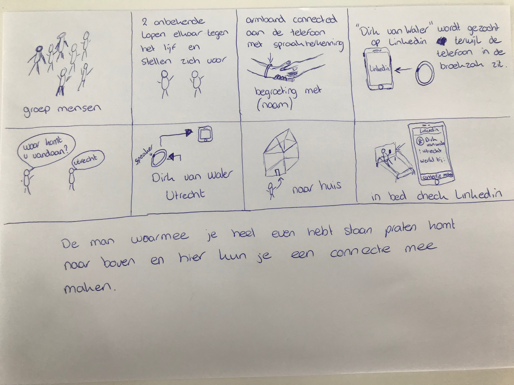

Wearables
Opdracht
Een wearable is iets dat draagbaar is en dit gaat onze communicatie, onze connectie met onszelf en de wereld beïnvloeden/veranderen. Vanuit school hebben wij de opdracht gekregen om uit twee onderwerpen te kiezen: de sociale interactie tussen lichaam ’s data en voelen als nieuw communicatiemiddel. Ik vind het tweede onderwerp het meest interessant, omdat een aanraking vaak snel gebeurt bij een begroeting bijvoorbeeld. Het concept is soort apparaatje die je kan dragen om je arm bijvoorbeeld. Waarbij elke keer als je iemand begroet met een hand er op je mobiel gezocht wordt naar diegene. Hetzij op LinkedIn, Facebook, Instagram, Snapchat enz. Vaak is het zoals je mensen niet kent, maar via via gedag gaat zeggen dat er niet gelijk een heel gesprek begonnen wordt. Achteraf zou je wel willen weten met wie je het genoegen had en wat hij of zij doet in het dagelijkse leven. Dit kun je dan op je mobiel die een connectie heeft met die wearable in de avond bekijken. Voor dit concept maak je gebruik van een telefoon en een soort naam herkenning sensor die met voor, achternaam en misschien andere persoonlijke informatie kan gaan zoeken. Als er meerdere bestaan kan een persoon zelf wel naar profielfoto kijken en de juiste persoon erbij pakken.
Onderzoek
NIXIE
Onlangs kwam ik nog iets gaafs tegen. Het betreft een wearable. Een Nixie. Dit apparaatje kan je om je pols vastmaken en vertellen een foto of video te maken. De armband transformeert dan in een drone, vliegt een paar meter bij jou vandaan en maakt een foto of een filmpje van je. Het team achter de Nixie heeft de Intel Make It Wearable-competitie gewonnen. Voor meer informatie kun je kijken op de website van FlyNixie. De Nixie is nog niet op de markt, maar schijnt wel snel te koop te zullen zijn. Hier alvast een voorproefje:
ARDUINO PHONE
Toen ik het internet aan het afstruinen was, kwam ik een onwijs toepasselijk project tegen. Iemand op Instructables.com heeft van een Arduino een telefoon gemaakt. Je kan er mee bellen, gebeld worden, sms'jes kun je ook ontvangen... Dit is nou echt perfect voor dit onderdeel. Een echte wearable maken van de Arduino. Mét functionaliteiten! op deze link is een handeling te lezen, hoe zelf een arduino phone te maken.
Reflectie
Ik denk dat wearables in de toekomst heel erg waardevol en handig zullen gaan worden. Kijk naar verschillende de verschillende wearables die er nu al zijn. Bijvoorbeeld een apple watch waar tegenwoordig heel veel mee kan zonder dat je op je telefoon zit. Of een google glas. Dat is ook wat ik het waardevolle aan deze hele topic vindt. Het staat nog zo in een beginstadium. Met wearables gaan nog zoveel nieuwe technieken en producties plaatsvinden. Maar dat kunnen we ons nu nog allemaal niet bedenken, terwijl het heel dichtbij is.